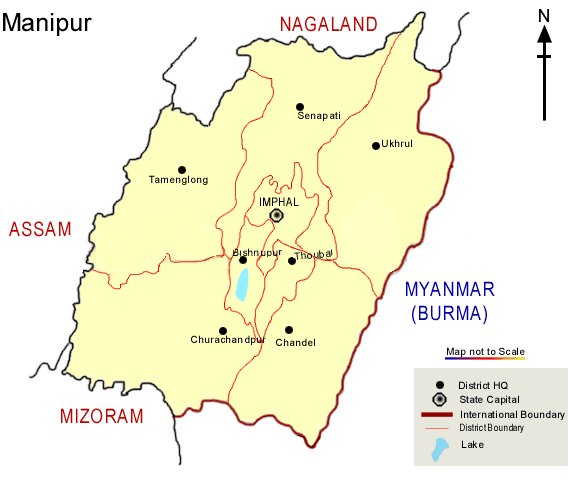

Loktak Lake is one of the largest freshwater lake in North-East India. It also has the only floating national park in the world named Keibul Lamjao. Keibul Lamjao National Park is the humble abode of the endangered Manipur deer. The place is as charming as it gets and gives you unparalleled viewing of some natural sceneries. Best time to visit – June to January
Map:
